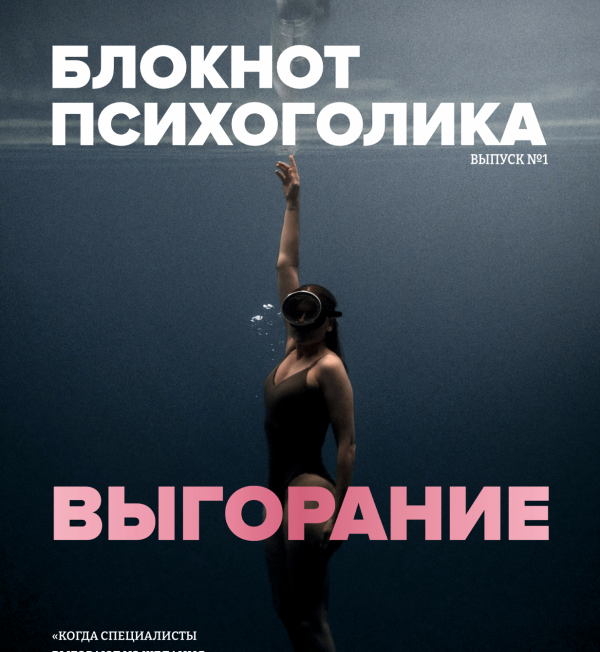

Журнал, о котором я мечтала много лет — и о котором теперь говорит моё профессиональное сообщество. Профессиональный язык встречается с человеческой уязвимостью. Честно, живо, без прикрас.
Поддержать и купить
За 10 лет в АВА я осознала, что невозможно говорить только о супервизиях, протоколах и учениках. За всем этим стоит колоссальный труд, подвижничество и храбрость обычного неравнодушного человека.
В ноябре 2025 года вместе с журналисткой и главным редактором Иларией Страдиной я запустила первый онлайн-выпуск о выгорании. А 20 февраля 2026 года уже держала бумажный журнал в руках. Первый тираж — 50 экземпляров.
От простого замысла рассказывать об аутизме «Блокнот Психоголика» превратился в пространство, где профессиональный язык встретился с человеческой уязвимостью и силой через живые истории.
Неудобные тексты про АВА, где вместе со специалистами мы спорим, сомневаемся и пересматриваем взгляды — но продолжаем искать лучшее для семей и аутичных людей.
Откровенные разговоры о том, как принять диагноз и при этом не потерять себя. Интервью с теми, кто держался из последних сил — и выдержал.
Честный разговор с аутичными людьми, которые говорят о своём опыте изнутри — без страха показаться странными или «поломанными».
Мы не создаём из аутизма трагедию или суперспособность. Человек в спектре — не «особенный герой», а разный, уставший, местами растерянный, но всё ещё сильный человек.
В журнале есть поддерживающий гайд «Когда больше нет сил» — без призывов «соберись», но с легальным правом почувствовать: ты не один, с тобой всё в порядке, мы рядом.
Говорите о нас, поддерживайте журнал и становитесь героями новых выпусков. Возможно, именно ваш голос даст кому-то из нас силы двигаться дальше.
Поддержать и купить